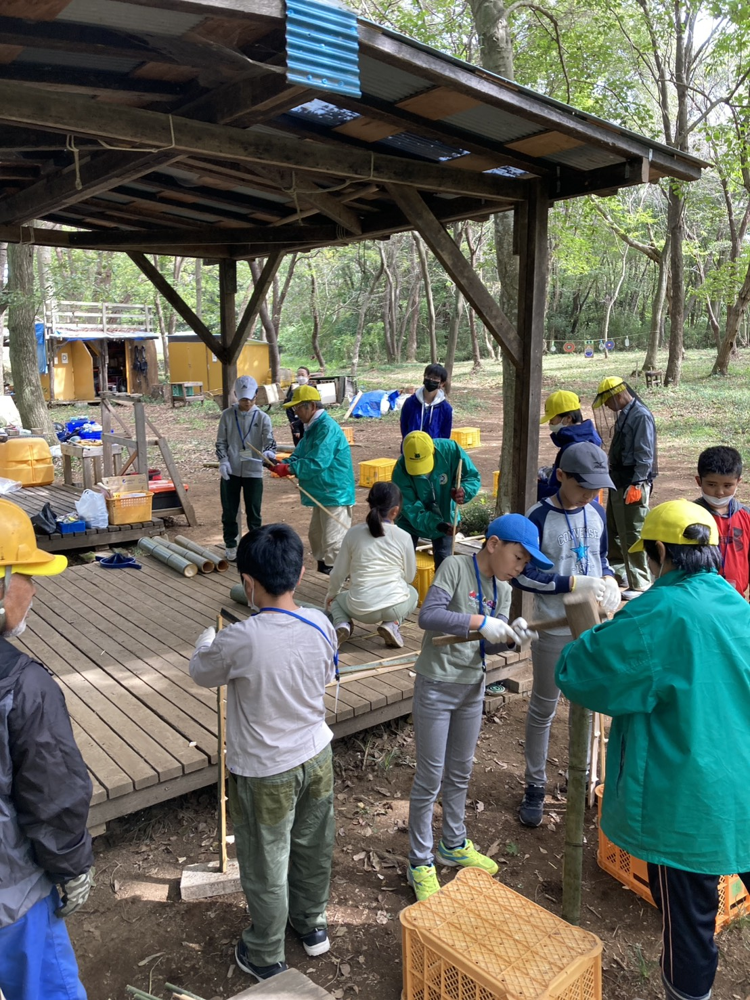
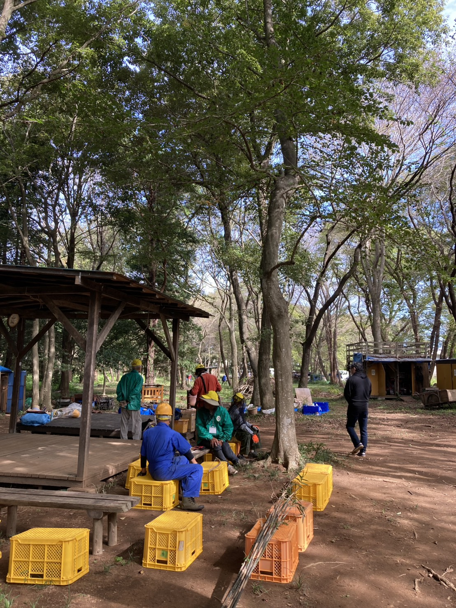
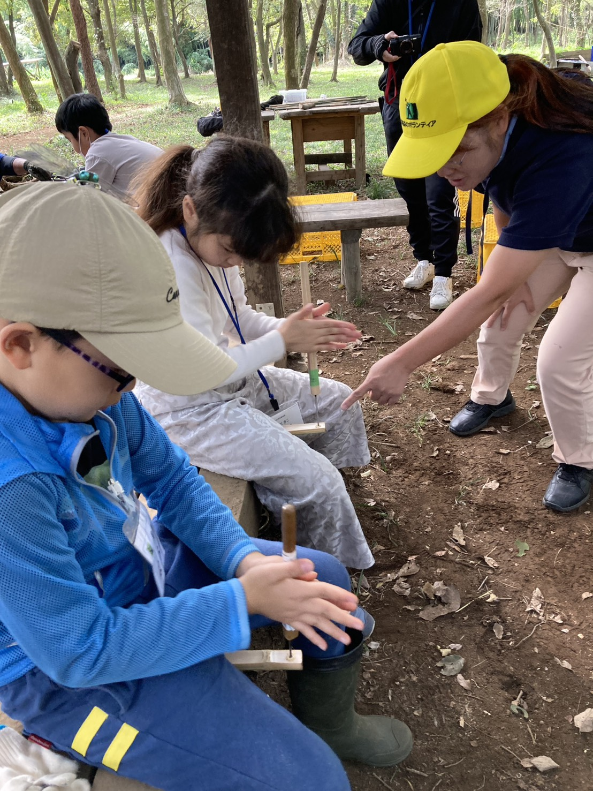
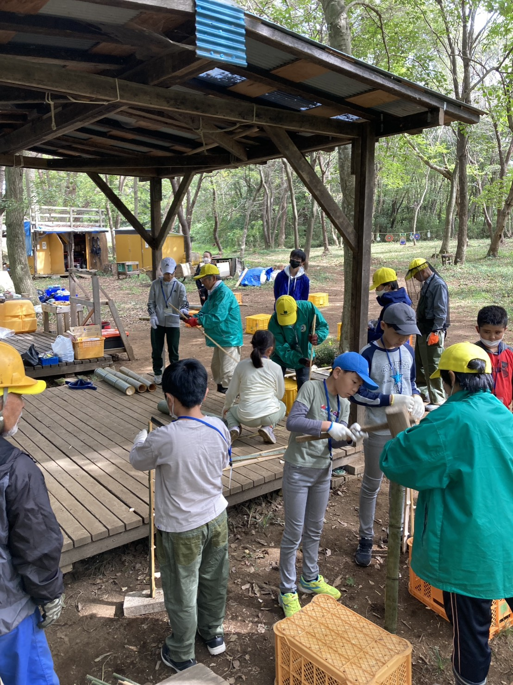
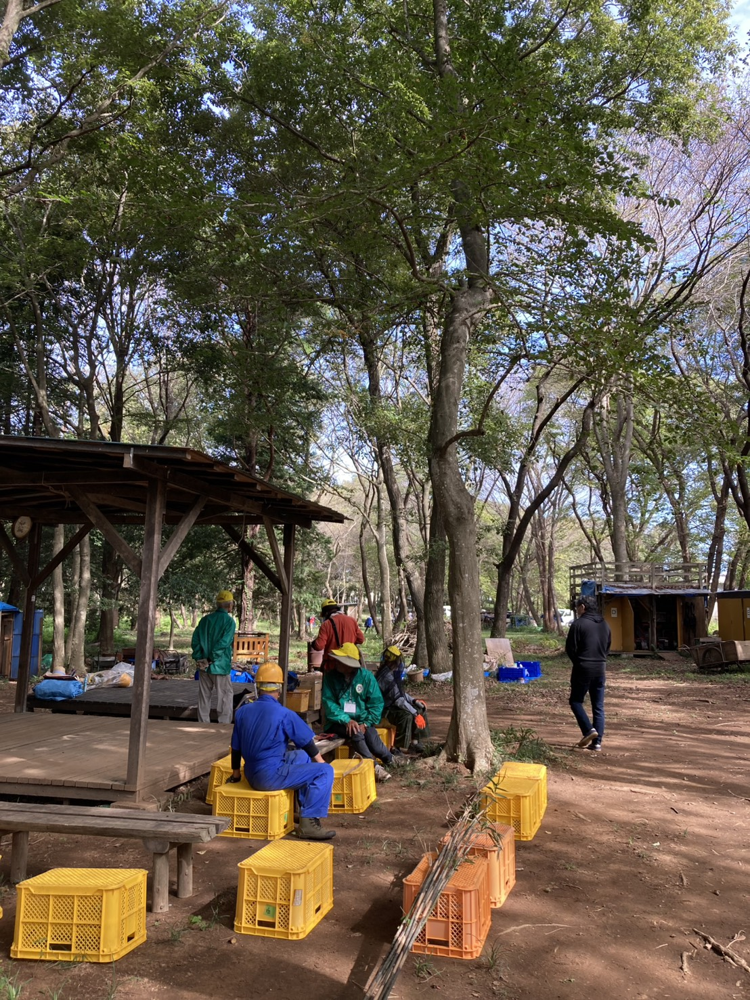
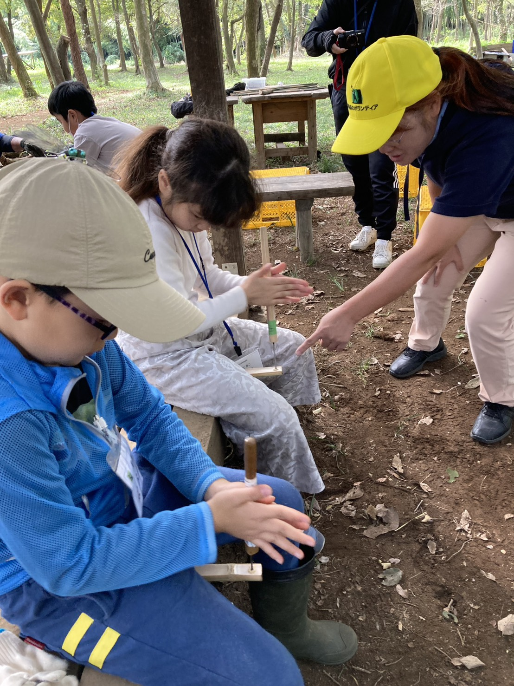

このたびは、クラウドファンディングにて「MORIANSを応援する」リターンをお選びいただき、本当にありがとうございます。
このページでは、皆さまのご支援への感謝をお伝えするとともに、森でほっとココア vol.3 の開催報告、そして MORIANS の日頃の活動をご紹介いたします。
普段なかなかお伝えできない活動の様子を、写真とともにお届けします。どうぞごゆっくりご覧ください。
MORIANSの活動拠点、茨城県水戸市 若宮の森
About MORIANS
若宮の森を守る人たち
常陽森のボランティアMORIANS（モリアンズ）は、茨城県水戸市 若宮の森を拠点に活動する森林ボランティアグループです。森林の環境保全や里山管理を通じて、地域の自然を守り続けています。
この森は四季折々の恵みをもたらしてくれます。春にはタケノコ、秋には栗、そして畑で育てたさつまいもを使ったほしいも作り。自然と人の営みが、ここでは穏やかにつながっています。
東屋でのミーティング風景。たき火の煙が漂う中、和やかに話し合います
Satoyama Experience
里山自然体験
MORIANSでは毎年7月、地域のこどもたちを招いて「里山自然体験」を開催しています。竹の弓矢づくりや竹細工づくりなど、森の素材を使った体験をメンバーが丁寧に指導します。
こどもたちの真剣な眼差しと、それを見守るメンバーの温かい笑顔。この森で育まれる関係が、地域のつながりを支えています。
 





Hot Cocoa vol.3
森でほっとココア vol.3 での活動
森でほっとココア vol.3 は、学生スタッフ、クラウドファンディングで募った当日サポーター、そしてMORIANSメンバーの三者が力を合わせて実現しました。
会場の設営から、ポトフの材料仕込み、焼きいもの準備まで。MORIANSのメンバーは慣れた手つきで野外調理をリードしながら、初めて森を訪れた学生やサポーターに優しく手ほどきをしてくれました。
彼らの日頃の活動あってこその「森でほっとココア」です。


New Connections
新しい出会いと交流
今回のイベントでは、MORIANSのメンバーと学生スタッフ・当日サポーターとの間に新しい交流が生まれました。普段は静かに森を守り続けている彼らが、若い世代と一緒に作業し、笑い合う姿はとても印象的でした。
森でほっとココアが、こうした世代を超えたつながりの場になっていることを、改めてうれしく感じています。

学生スタッフ・当日サポーターの皆さん

森でほっとココア vol.3 全員集合